古民家再生の記録
井戸のリノベーション
井戸があるなら使わなきゃ。井戸のリノベは松山市の 近松井戸工業所 様にお願いしました。
業者さん探しはネットで。幾つかの業者さんを比較してみて近松さんのブログを見つけ、お仕事振りが素敵だったのでＨＰから問合せたのが2015年2月半ば。翌週には汐見で落ち合い現地調査をして頂きました。
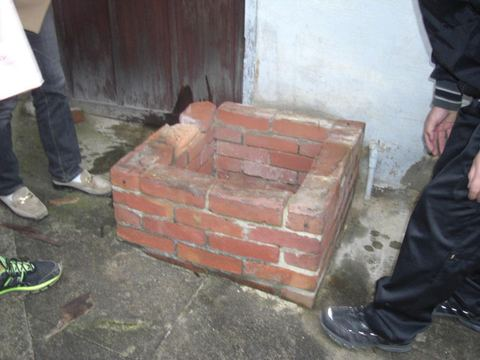
ビフォー
水の汲み出し方法は、①紐付きのバケツで手汲み（昔はそうしていたそうです。）②つるべ、③手押しポンプ、④電動ポンプ の４択です。
利便性を取るか、昔ながらに拘るか。決められなかったのでＦＢでアンケートを取りました。前年の11月に現地調査に来た河原デザイン・アート専門学校の先生も協力して下さり学生さん40人に聞いたところ、なんと一番人気はバケツ汲み。かなり迷いましたが実家で実際に井戸を使っている知人の｢手で汲む？無理無理！｣の一言で電動ポンプに決めました。
最近の井戸は事故防止、防犯の観点から蓋を固定してポンプで汲み上げる事が多いのですが、現地調査の時にベテランの職人さんから井戸の内側が石組みは今や貴重と教えて頂いたの隠すのがもったいない。井戸でスイカも冷やしたいし、手押しポンプはフォルムが綺麗。という我がままで結局全部盛りの井戸になりました。やり過ぎですね。
近松さんに相談したところ、井戸の横にアンティーク煉瓦の固定台を増設し、そこに手押しポンプを設置する解決策をご提案頂きました。いい感じです！
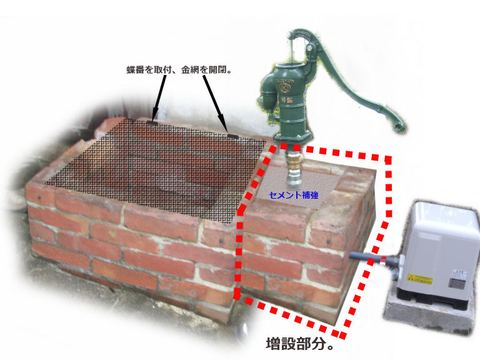
2015年4月25日 基礎工事、井戸洗浄、水量調査。マリンさんに立ち会って貰いました。
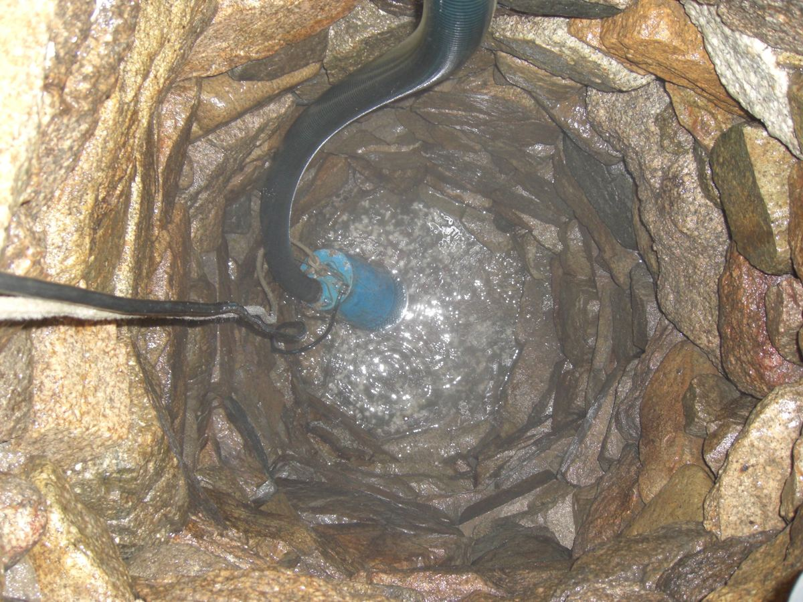
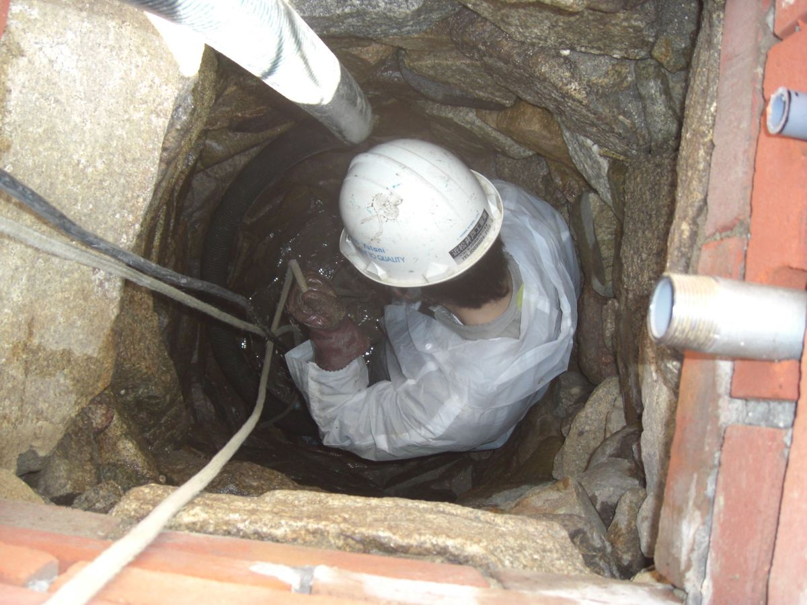
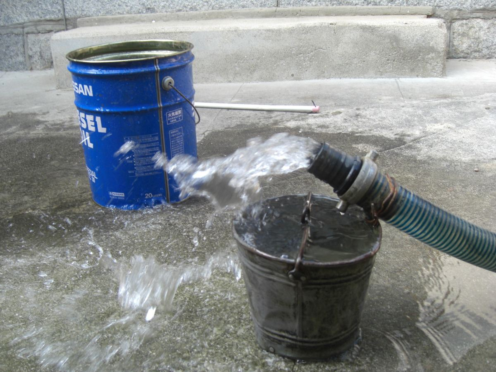
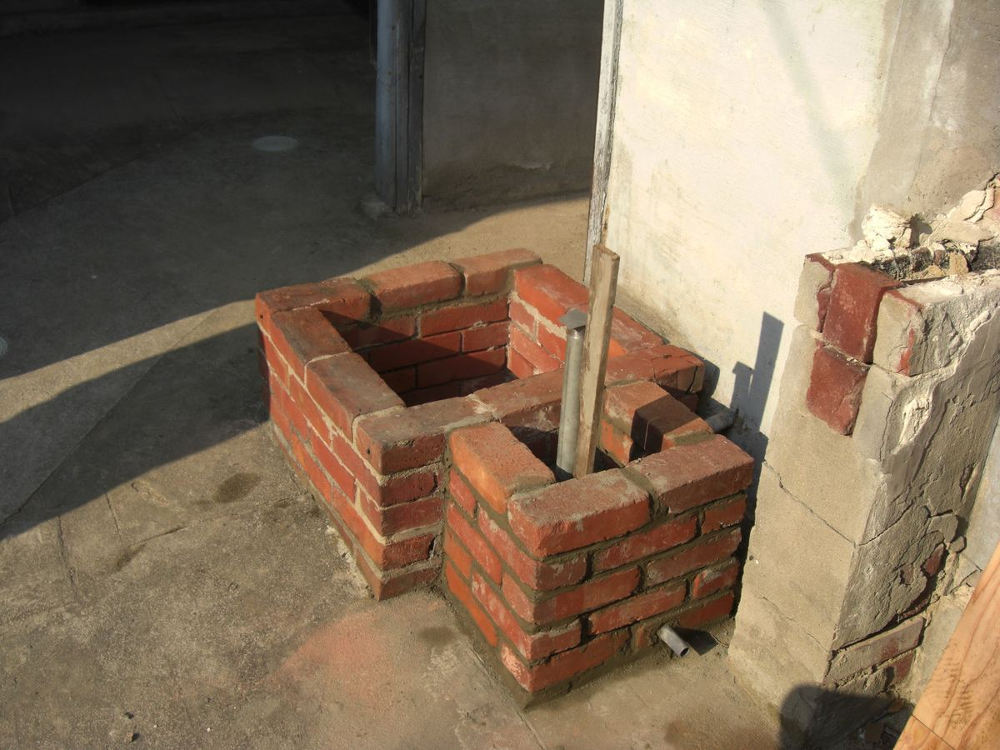
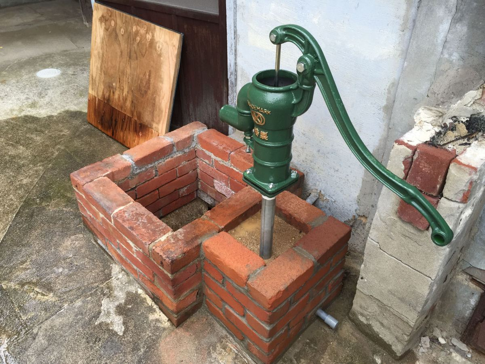
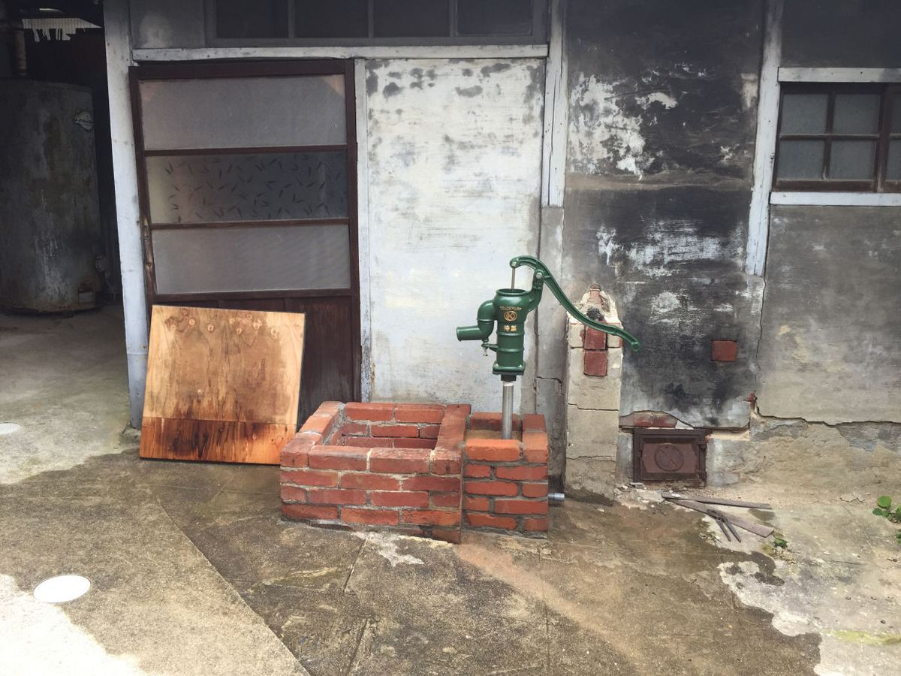
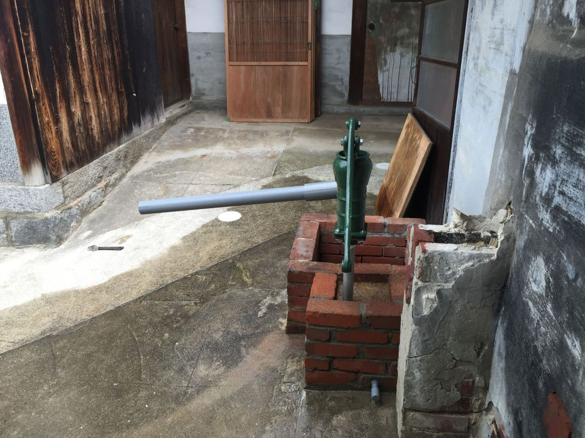
母に報告したら｢あら～普通に飲んでいたわよ。｣と言われましたが、20年ほど前の高潮であちこちの井戸に海水が入ったらしく、その影響かもしれません。使っている内に飲用適合にならないか、毎年の検査を楽しみにしています。
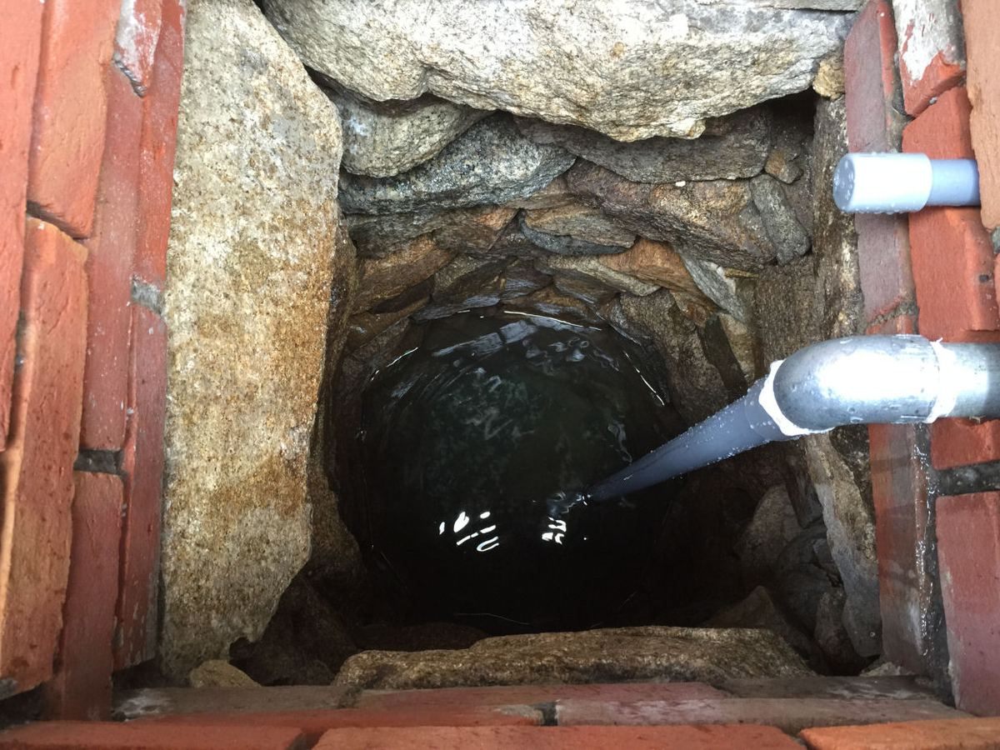
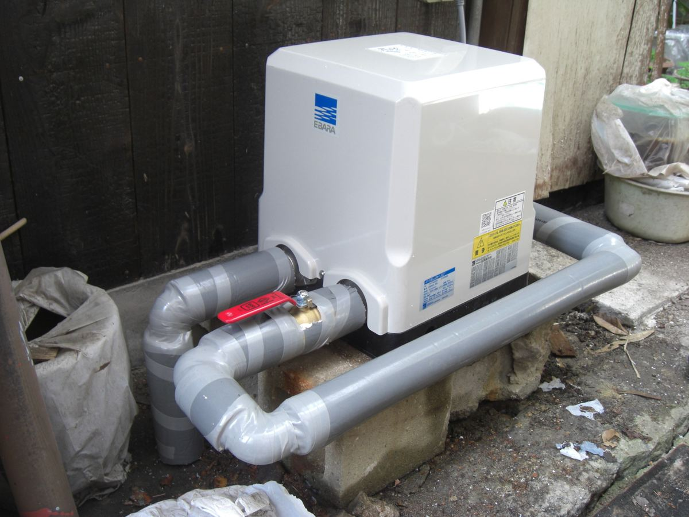
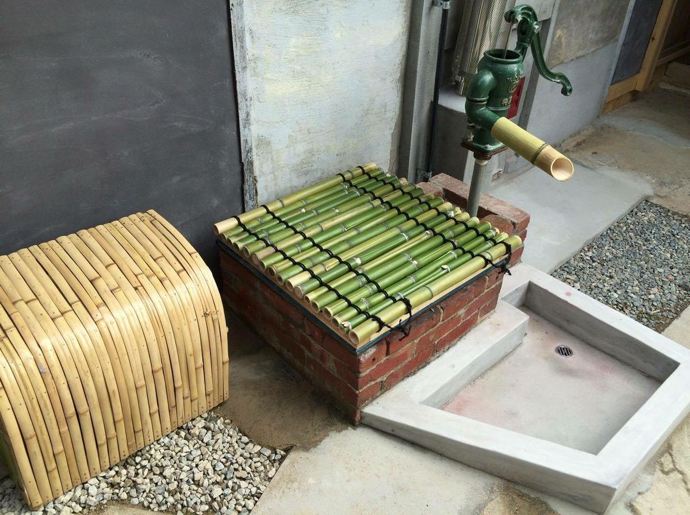
完成！ ポンプの目隠し、竹の井戸蓋、ポンプの口の竹筒はボランティアの方に、排水枠は左官の岩上さんに作って頂きました。
意味なく水を出し続けるゲストさん多し。楽しいです。